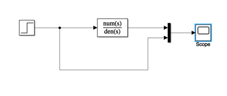

Unit 4.8: Computer-Aided Systems Analysis and Simulation
Contents
Unit 4.8: Computer-Aided Systems Analysis and Simulation#
Follow along at cpjobling.github.io/eg-150-textbook/laplace_transform/8/casas

Agenda#
We conclude our introduction to the applications of the Laplace transform by demonstrating the facilties provided by the Control Systems Toolbox and the simulation tool Simulink. We will repeat ex:14.2 using these tools and we will conclude by exploring some of the problems you have studied in EG-152 Analogue Design hopefully confirming some of the results you have obbserved in that lab.
% Initialize MATLAB
clearvars
cd ../matlab
pwd
format compact
ans =
'/Users/eechris/code/src/github.com/cpjobling/eg-150-textbook/laplace_transform/matlab'
Defining Transfer Functions in MATLAB#
There are two forms of polynomial representation in MATLAB. The most obvious is the expanded polynomial form where the numerator and denominator of a transfer function would be entered as two row vectors with the polynomial coefficients entered in the order of descending powers of \(s\).
For example, if:
The numerator and denominator polynomials from Eq. (42) are entered in MATLAB as
b = [1, 2, 3]; % s^2 + 2s + 3
a = [1, 4, 5, 6]; % s^3 + 4s^2 + 5s + 6
Missing coefficients must be entered as zero: so \(q(s) = s^2 + 2s\) and \(r(s) = s^4 + s^2 + 1\) are entered as
q = [1, 2, 0];
r = [1, 0, 2, 0, 1];
Defining polynomials symbolically#
We have already seen that we can use the symbolic math toolbox to define polynomials symbolically.
syms s
Define a rational polynomial
G(s) = (s^2 + 2*s + 3)/(s^3 + 4*s^2 + 5*s + 6)
G(s) =
(s^2 + 2*s + 3)/(s^3 + 4*s^2 + 5*s + 6)
Extract numerator and denominator polynomials
[Num,Den] = numden(G(s))
Num =
s^2 + 2*s + 3
Den =
s^3 + 4*s^2 + 5*s + 6
Providing that the the coefficients are numeric, we can convert back and forth between symbolic polynomials and numeric polynomials using the functions sym2poly and poly2sym:
nNum = sym2poly(Num), nDen = sym2poly(Den)
nNum =
1 2 3
nDen =
1 4 5 6
Convert from numerical polynomial to symbolic. Second argument is polynomial variable. The default is x.
poly2sym(nNum,s)
ans =
s^2 + 2*s + 3
Polynomials - Factorised form#
If you know the poles and zeros of a transfer function you can represent it in a factorized form.
The advantage of this formulation is that the zeros of the numerator and denominator polynomials are obvious by inspection. So it is often used in the preliminary analysis of the performance of a dynamic system.
The poles of the transfer function Eq. (43) are \(s = 0,\,-1\,-4\) and the zeros are \(s = -1,\,-3\)
In MATLAB, this form of transfer function is specified by a column vector of the zeros and a column vector of the poles:
z = [-1; -3];
p = [0; -2; -4];
A third parameter, the overall gain , completes the definition of the so called pole-zero-gain form of transfer function.
In this case
K = 1;
The Linear Time Invariant (LTI) System Object#
A few years ago, the Mathworks introduced a new data object for the creation and manipulation of system transfer functions.
This object is called the Linear Time Invariant (LTI) System Object.
It is used to gather the components of a transfer function into a single variable which can then easily be combined with other LTI system objects and passed to system analysis functions.
To create a LTI system object representing the factored transfer function from Eq. (43) the following command is issued:
G = zpk(z,p,K)
G =
(s+1) (s+3)
-------------
s (s+2) (s+4)
Continuous-time zero/pole/gain model.
The expanded numerator and denominator form of the transfer function is readily obtained by using the data extraction function tfdata:
[num,den]=tfdata(G,'v')
num =
0 1 4 3
den =
1 6 8 0
LTI system objects can also be created from the expanded form of a transfer function directly:
G2=tf(num,den)
G2 =
s^2 + 4 s + 3
-----------------
s^3 + 6 s^2 + 8 s
Continuous-time transfer function.
G2 = tf(G)
G2 =
s^2 + 4 s + 3
-----------------
s^3 + 6 s^2 + 8 s
Continuous-time transfer function.
and the zeros and poles similarly extracted:
[zeros,poles,gain]=zpkdata(G2,'v')
zeros =
-3
-1
poles =
0
-4
-2
gain =
1
LTI system objects can also be created from the expanded form of a transfer function directly:
G2=tf(num,den)
G2 =
s^2 + 4 s + 3
-----------------
s^3 + 6 s^2 + 8 s
Continuous-time transfer function.
and the zeros and poles similarly extracted:
[zeros,poles,gain]=zpkdata(G2,'v')
zeros =
-3
-1
poles =
0
-4
-2
gain =
1
Setting LTI Properties#
Numerous options are available to document the LTI system objects that you create.
For example, suppose the transfer function G represents a servomechanism (discussed next year) with input 'Voltage' and output 'Angular Position' We can add this information to the LTI system as follows:
set(G,'InputName','Voltage','OutputName','Angular Position')
Such documentary information is probably best added when the LTI system object is created, for example as:
G3=zpk(z,p,K,'InputName','Armature Voltage (V)',...
'OutputName','Load Shaft Position (rad)',...
'notes','An armature voltage controlled servomechanism')
G3 =
From input "Armature Voltage (V)" to output "Load Shaft Position (rad)":
(s+1) (s+3)
-------------
s (s+2) (s+4)
Continuous-time zero/pole/gain model.
Once the LTI object has been documented, the documentation can be extracted using commands like:
get(G3,'notes')
ans =
1x1 cell array
{'An armature voltage controlled servomechanism'}
One can also access the documentation using an object reference notation
in=G3.InputName, out=G3.OutputName
in =
1x1 cell array
{'Armature Voltage (V)'}
out =
1x1 cell array
{'Load Shaft Position (rad)'}
All the documentation available on an LTI system object may be extracted with a single command:
get(G3)
Z: {[2x1 double]}
P: {[3x1 double]}
K: 1
DisplayFormat: 'roots'
Variable: 's'
IODelay: 0
InputDelay: 0
OutputDelay: 0
InputName: {'Armature Voltage (V)'}
InputUnit: {''}
InputGroup: [1x1 struct]
OutputName: {'Load Shaft Position (rad)'}
OutputUnit: {''}
OutputGroup: [1x1 struct]
Notes: {'An armature voltage controlled servomechanism'}
UserData: []
Name: ''
Ts: 0
TimeUnit: 'seconds'
SamplingGrid: [1x1 struct]
System Transformations#
MATLAB supports the easy transformation of LTI system objects between expanded and factored forms. For example to convert a transfer function from expanded form to pole-zero-gain form the following command is used:
G4 = zpk(G2)
G4 =
(s+3) (s+1)
-------------
s (s+4) (s+2)
Continuous-time zero/pole/gain model.
To convert from zero-pole-gain form to expanded form we use the function tf
G5 = tf(G)
G5 =
From input "Voltage" to output "Angular Position":
s^2 + 4 s + 3
-----------------
s^3 + 6 s^2 + 8 s
Continuous-time transfer function.
Please note that these transformations are merely a convenience that allow you to work with your preferred form of representation. Most of the tools that deal with LTI system objects will work with any form. Furthermore, you can always use the data extraction functions zpdata and tfdata to extract the zero-pole-gain and numerator-denominator parameters from a LTI system, no matter in which form it was originally defined, without the need for an explicit conversion.
Combining LTI System Objects#
A powerful feature of the LTI system object representation is the ease with which LTI objects can be combined.
Systems in series#
For example, suppose we have two systems with transfer functions
and
Then the series combination of the two transfer functions (\(G_1(s)G_2(s)\)) is obtained using the * (multiplication) operator:
G1=tf([1 1],[1 3]);
G2=tf(10,conv([1 0],[1 2])); % conv is polynomial multiplication
Gs=G1*G2 % series connection of two LTI objects
Gs =
10 s + 10
-----------------
s^3 + 5 s^2 + 6 s
Continuous-time transfer function.
We can extract the poles and zeros of the combined systems using the zpdata function
[zeros,poles,K]=zpkdata(Gs,'v')
zeros =
-1
poles =
0
-3.0000
-2.0000
K =
10
Systems in parallel#
The parallel connection of two LTI system objects corresponds to addition
Gp = G1 + G2
Gp =
s^3 + 3 s^2 + 12 s + 30
-----------------------
s^3 + 5 s^2 + 6 s
Continuous-time transfer function.
Systems with feedback#
The feedback connection of two LTI system objects is also supported.
The function feedback is used for this.
Let
be the forward transfer function of a system with feedback and
be the feedback network. Then the closed-loop transfer function (assuming negative feedback) is
In MATLAB:
G = tf([2 5 1],[1 2 3],'inputname','torque',...
'outputname','velocity');
H = zpk(-2,-10,5);
Gc = feedback(G,H) % negative feedback assumed
Gc =
From input "torque" to output "velocity":
0.18182 (s+0.2192) (s+2.281) (s+10)
-----------------------------------
(s+3.419) (s^2 + 1.763s + 1.064)
Continuous-time zero/pole/gain model.
The Analysis of LTI System Objects#
MATLAB uses the LTI system objects as parameters for the analysis tools such as impulse, step, nyquist, bode and rlocus.
Some of these are immediately useful for signals and systems use. You will encounter the others in EG-243 Control Systems.
As an example of their use try each of following:
Root locus#
rlocus(G*H),sgrid

Open-loop frequency response#
bode(G*H),grid

Closed-loop step response#
step(Gc),grid

Closed-loop frequency response#
bode(Gc),grid

Closed-loop impulse response#
impulse(Gc),grid

Nyquist diagram#
nyquist(G*H),grid

MATLAB also provides two interactive graphical tools that work with LTI system objects
ltiviewis a graphical tool that can be used to analyze systems defined by LTI objects. It provides easy access to LTI objects and time and frequency response analysis tools.rltoolis an interactive tool for designing controllers using the root locus method.
Control engineers will find sisotool useful.
You are encouraged to experiment with these tools.
Partial Fraction Expansions#
MATLAB provides a command called residue that returns the partial fraction expansion of a transfer function. That is, given
it returns
where \(p_k\) are the poles of the transfer function, \(r_k\) are the coefficients of the partial fraction terms (called the residues of the poles) and \(K(s)\) is a remainder polynomial which empty unless the rational polynomial is non-proper.
To use this, the starting point must be the expanded form of the transfer function in numerical polynomial form.
Thus given
we obtain the partial fraction expansion using the MATLAB command sequence:
k = 5; z = [-2]; p = [0; -3; -10]; % zero-pole-gain form
C = zpk(z,p,k);
[num,den] = tfdata(C,'v')
%
% (Note that the leading terms in num are zero).
num =
0 0 5 10
den =
1 13 30 0
[r,p,k] = residue(num,den)
r =
-0.5714
0.2381
0.3333
p =
-10
-3
0
k =
[]
which we interpret to mean
If \(C(s)\) represents the step response of the system
then the step response is, by inverse Laplace Transform:
You can check this with the commands:
newC = tf([5, 10],[1, 13, 30])
step(newC),grid % provides $u_0(t)$
newC =
5 s + 10
---------------
s^2 + 13 s + 30
Continuous-time transfer function.

t = 0:.05:1.5; % time vector
c = 0.3333 + 0.2381 * exp(-3*t) - 0.5714 * exp(-10*t);
plot(t,c),grid

Completing the problem using the Symbolic toolbox is left as an exercise for the reader.
There are numerous other documentation features provided for LTI system objects. Please consult the on-line help for full details.
Using Transfer Functions in Simulink for System Simulation#
The Simulink transfer function (Transfer Fcn) block (see Fig. 69) implements a transfer function

Fig. 69 The LTI Block in Simulink#
The transfer function block represents a general input output function
and is not specific nor restricted to circuit analysis.
It can, however be used in modelling and simulation studies.
Examples 15#
Example 15.1#
MATLAB Example
We will solve this examples by hand and then review the solution in MATLAB lab 5.
Recast ex:14.2 as a MATLAB problem using the LTI Transfer Function block.
For simplicity use parameters \(R_1 = R_2 = R_3 = 1\; \Omega\), and \(C_1 = C_2 = 1\) F.
Calculate the step response using the LTI functions and
Verify the result with Simulink.
MATLAB Solution#
From a previous analysis (ex:14.2) the transfer function is:
so substituting the component values we get:
We can find the step response by letting \(v_{\mathrm{in}}(t) = u_0(t)\) so that \(V_{\mathrm{in}}(s)=1/s\) then
We can solve this by partial fraction expansion and inverse Laplace transform
as is done in the text book with the help of MATLABs residue function.
Here, however well use the LTI block.
Define the circuit as a transfer function
G = tf([-1],[1 3 1])
G =
-1
-------------
s^2 + 3 s + 1
Continuous-time transfer function.
step response is then:
step(G),grid

Live Script Solution#
A standalone script version of this solution is available as example15_1.mlx
Simulink model#
See example_15_1.slx
open example_15_1

Result

Lets go a bit further by finding the frequency response:
bode(G),grid

Note
The following examples have been adapted from Session 3: RC Networks and the Op-Amp in the Time-Domain, from EG-152 Analogue Design ([Evans et al., 2016]).
Example 15.2: Periodic Excitation#
Consider the RC circuit shown in Fig. 70(b). The circuit is subjected to the periodic signal \(x(t) = v_1(t)\) shown in Fig. 70(a).
{kind=link}
Fig. 70 Circuit for Investigating Recurrent Boundary Conditions (Figure 3.0 of [Evans et al., 2016])#
a) Use the Laplace transform to determine the transfer function \(H(s)\) and the impulse response \(h(t)\) of the RC circuit.
b) Determine the step response of the RC circuit.
c) Use the results of Example 15.2(a) and (b) and properties of the Laplace transform to determine the response \(y(t) = v_2(t)\) to \(v_1(t)\).
d) Given that \(V_L = -5\) V and \(V_U = 5\) V, and assuming that the time constant \(\tau = RC = T_A = 2 T_B\), use MATLAB to plot the response \(v_1(t)\) over two cycles of the input signal. Use any suitable values of \(RC\) that you feel are appropriate.
e) Use the transfer function block and the signal editor provided by Simulink to confirm by simulation the response computed in Example 15.2(d).
Example 15.3: Operational Differentiator#
In Section 3.3 of [Evans et al., 2016] it is given that the differential equation of the operational differentiator illustrated in Fig. 71 is
{kind=link}
Fig. 71 Schematic of Operational Differentiator (Figure 3.4 of [Evans et al., 2016])#
a) Give the transfer function \(H(s) = V_2(s)/V_1(s)\) of the operational differentiator.
b) Compute the impulse and step response of the operational differentiator.
c) Compute and plot the response of the operational differentiator to three cycles of the input of Fig. 59(a) when \(V_L = -6\) V, \(V_U = 3\) V, given that the waveform period \(T = 1\) ms, the duty cycle \(D = T_A/(T_A + T_B) = 2/5\) and time constant \(\tau = RC = 50\) ms.
Example 15.4: Operational Integrator#
In Section 3.5 of [Evans et al., 2016] it is given that the differential equation of the operational inetgrator illustrated in Fig. 72 is

Fig. 72 Schematic of Operational Integrator (Figure 3.7 of [Evans et al., 2016])#
a) Give the transfer function \(H(s) = V_2(s)/V_1(s)\) of the operational interator.
b) Compute the impulse and step response of the operational integrator.
c) Compute and plot the response of the operational differentiator to three cycles of the input of Fig. 59(a) when \(V_L = -3\) V, \(V_U = 6\) V given that the waveform period \(T = 5\) ms, the duty cycle \(D = T_A/(T_A + T_B) = 1/3\) and time constant \(\tau = RC = 200\) ms.
Lab 5#
In Lab 5 we will have the opportunity to explore some of the features discussed in this class.
Summary#
In this section we have explored the various methods that we can use the computer to solve Laplace transform problems for which the system is cast as a transfer function. We have covered the following topics:
Takeaways#
In MATLAB the rational polynomials that represent the transfer functions of continuous-time LTI systems can be defined numerically or symbolicly (see Defining Transfer Functions in MATLAB). There are two forms of numerical representation. The first of these uses the expanded polynomials (called transfer function), the second uses the factors (called zero-pole-gain form). The Control Systems Toolbox in MATLAB provides an object called the LTI block which supports both forms (and a third form, called state-space, not studied here, which is used in filter design and advanced control systems).
The MATLAB commands discussed in this section are summarized in the table given below.
Quick Reference to MATLAB objects and functions#
Name |
Purpose |
Usage |
Reference |
Notes |
|---|---|---|---|---|
|
Converts a symbolic polynomial to a numerical polynomial |
|
Coefficents of the symbolic polynomial must be numbers |
|
|
Converts a numerical polynomial to a symbolic polynomial |
|
- |
|
|
Extracts numerator and denominator from a rational polynomial expressed in symbolic form |
|
- |
|
Numerical LTI object which represents a continuous-time or discrete-time LTI system |
- |
|||
|
Numerical LTI object representing a transfer function model in zero-pole-gain (factorized) form |
|
- |
|
|
Numerical LTI object representing a transfer function model in polynomial form |
|
- |
|
|
Data extraction function that returns the numerator and denominator polynomials from an LTI model |
|
- |
|
|
Data extraction function that returns the zeros, poles and gain from an LTI model |
|
- |
|
|
Set and retrieve properties of LTI system objects |
Useful for documenting your work |
||
|
Connect two LTI objects in a feedback connention |
|
Default assumes negative feedback so |
|
|
Computes and plots the impulse response of an LTI system |
|
Works for both continuous-time and discrete-time systems. |
|
|
Computes and plots the step response of an LTI system |
|
Works for both continuous-time and discrete-time systems. |
|
|
Computes and plots the Nyquist diagram for an LTI system |
|
Nyquist plots are used in Control systems analysis and design |
|
|
Computes and plots a Bode diagram for an LTI system |
|
Bode plots present the frequency response of a system using a combined plot of maginutude (in DB) and phase (in degrees) plotted against log radian frequency. |
|
|
Computes and plots the root locus of an open-loop system |
|
Root locus diagrams shows the movement of the closed-loop poles of a feedback system when some parameter, usually gain, is changed. They are used in control system analysis and design. |
|
|
Computes the residues of a partial fraction expansion of a numrical rational polynomial |
|
|
|
|
Computes the factors of a symbolic polynomial |
|
This function can also find prime factors or numbers. |
|
|
Expands a factorised polynomial |
|
This function is useful for converting systems that have pairs of complex poles into quadratic factors |
|
|
Plots simulated time response of dynamic system to arbitrary inputs |
|
|
Next time#
We will complete this course with an introduction to Frequency response analysis of periodic signals via the Fourier series.
References#
Matlab Solutions#
For convenience, single script MATLAB solutions to the examples are provided and can be downloaded from the accompanying MATLAB folder.